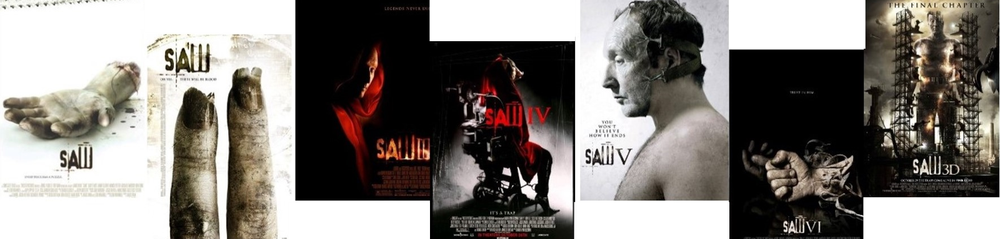
THE SAW FRANCHISE HIGHLIGHTED (I-V)
(SAW II-VII saved for future use, Spiral and Jigsaw not included because I don't really like them that much)
SAW I
Synopsis
Photographer Adam Faulkner-Stanheight and Doctor Lawrence Gordon wake up chained to pipes on opposite sides of a dirty, decrepit bathroom with no recollection of how they got there. In the middle of the room is a dead man holding a record player and a gun. They are given various clues in order to help them escape, which leads them to a bag that contains two hacksaws - too dull to cut through metal, but sharp enough to cut through flesh and bone...
!Spoilers Ahead!
Memorable Traps & Major Characters...
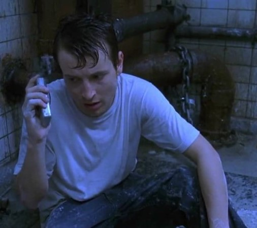
Adam Faulkner-Stanheight - "Bathroom Trap"
"Rise and shine,
Adam. You're probably wondering where you are. I'll tell you where you might be. You might be in the room that you die in. Up until now you simply sat in the shadows watching others live out their lives. But what do voyeurs see when they look into the mirror? Now, I see you as a strange mix of someone angry, yet apathetic. But mostly just pathetic. So are you going to watch yourself die today, Adam, or do something about it?"
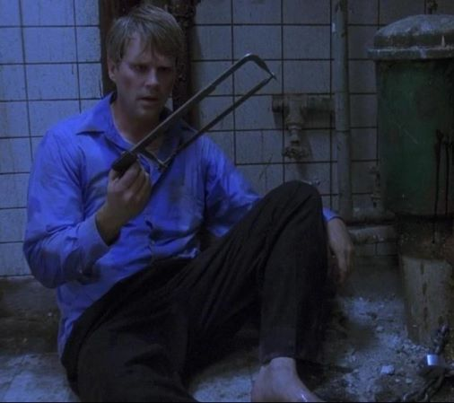
Doctor Lawrence Gordon - "Bathroom Trap"
"Dr. Gordon, this is your wake-up call. Every day of your working life you have given people the news that they're gonna to die soon. Now, you will be the cause of death.
Your aim in this game is to kill Adam. You have until six on the clock to do it. There's a man in the room with you. When there's that much poison in your blood, the only thing left to do...is shoot yourself. There are ways to win this hidden all around you. Just remember, X marks the spot for the treasure. If you do not kill Adam by six, then Alison and Diana will die, Dr. Gordon... and I'll leave you in this room to rot. Let the game begin. Follow your heart."
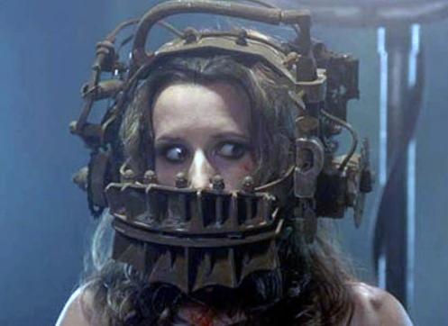
Amanda Young - "Reverse Bear-Trap"
"Hello, Amanda. You don't know me, but I know you. I want to play a game. Here's what happens if you lose. The device you're wearing is hooked into your upper and lower jaws. When the timer at the back goes off, your mouth will be permanently ripped open. Think of it like a reverse bear trap. Here, I'll show you. There is only one key to open the device. It's in the stomach of your dead cellmate. Look around, Amanda. Know that I'm not lying. Better hurry up. Live or die, make your choice."
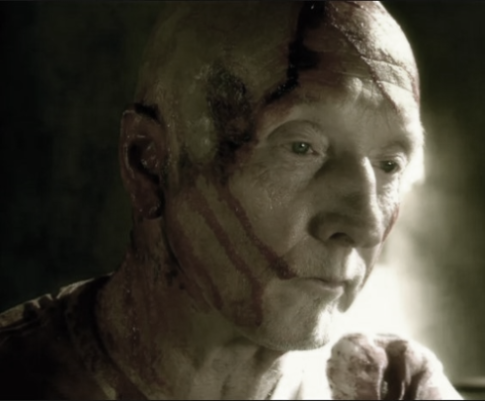
John Kramer - "Jigsaw"
"Game Over."
Other Characters
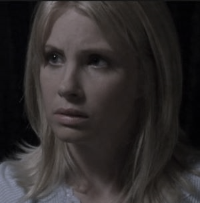
Alison Gordon
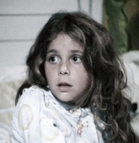
Diana Gordon
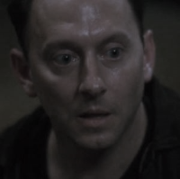
Zepp Hindle
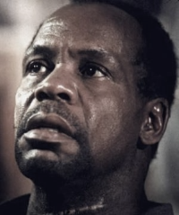
David Tapp
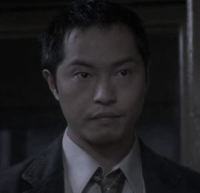
Steven Sing
Other Traps
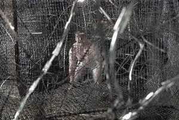
Paul Leahy - "Razorwire Maze"
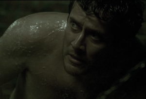
Mark Wilson - "Flammable Jelly"
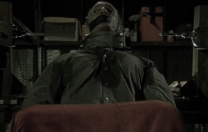
Jeff Ridenhour - "Drill-Chair"
Comments...
- A very well produced film despite the budget limitations. The production team uses their small, run-down sets to their advantage, making the traps feel claustrophobic and dirty. The trademark green lighting further amplifies the 'sickliness' of the traps and the general cool, artificial lights give an unsettling feeling all throughout.
- The Jigsaw Killer's motivations are certainly unique; a murderer that doesn't murder for revenge, nor for recognition, but for rehabilitation. It doesn't mean he's consistent with that ideology but that IS what he believes his ideology is.
- The beautiful wordplay in all the clues left by Jigsaw is amazing, the "OH!" moment when you finally realize the true meaning of seemingly convuluted clues... It's elite.
- Don't let your wife prevent you from finding your soulmate (Re; Lawrence and Adam)(/joking)
- Adam's scream and John's "Game Over" at the end of the movie ill forever be one of the most iconic movie sequences I've ever heard.
- Please watch it, whoever may read this. I am desperate to talk about it to someone.